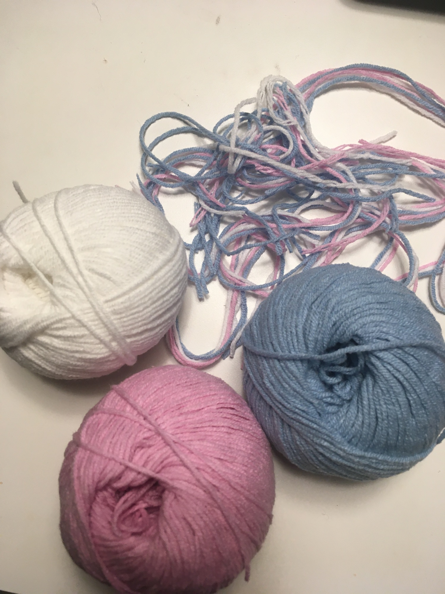
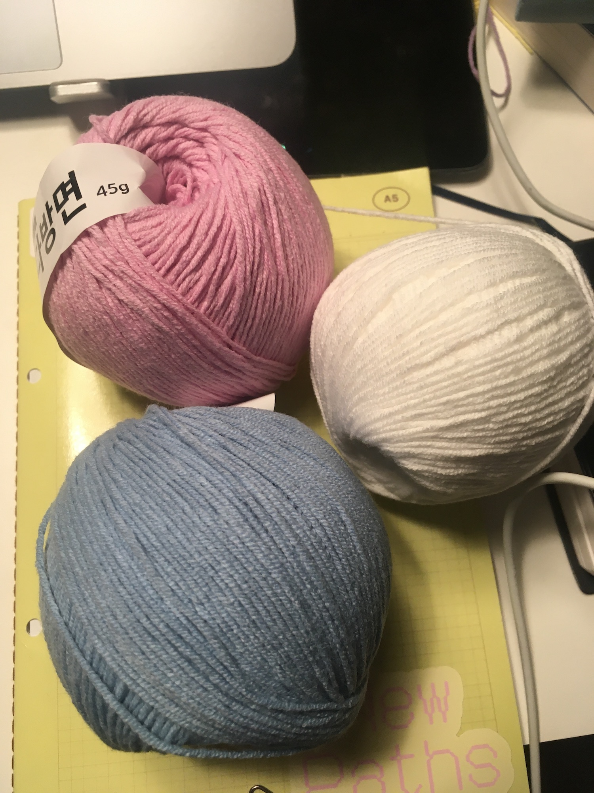

(완성품 사진을 안 찍음!!!!!)
나에게 단 하루만 더 있었더라면… 딱 하루만 더 있었더라면…
완성하고 나니 이미 쓸모가 좀 없어진 마당에 좀더 위로 단을 세울까 했는데, 그러면 또 색 조합이 망가져서 에휴에휴 그냥 커요미한 동그란 형태의 가방으로 만족..
 크로커다일 스티치(crocodile stitch)라는 기법을 배웠다. 이런 기법은 뭐 배운다고 해서 기억에 남을지는 미지수이지만.. 크로커다일 스티치를 내가 이해한대로 설명해보자면 2단으로 구성돼 있는데, 1단은 기둥을 세우는 단이다. 한길긴뜨기 2 - 사슬1 - 한길긴뜨기 1 - 사슬 1 - 한길긴뜨기 2 - 사슬1 .. 이런 식으로 반복해서 기둥을 세우고, 그 다음 단에서 한길긴뜨기 2 부분에 각각의 한길긴뜨기 기둥에 양쪽으로 [5개의 한길긴뜨기 - 사슬 1 - 5개의 한길긴뜨기]를 뜨고 이어지는 한길긴뜨기 1 부분에 빼뜨기를 해주는 식이다. 짧뚱한 이파리 같기도 하고 비늘 같기도 하고 나름 귀여운 무늬를 뜰 수 있는 기법이었다.
이런 모양을 내는 특수한 기법을 발견할 때마다 대충 한 작품 뜰 때만 기억하고 마는데, 코바늘 기법을 좀 이것저것 찾아서 배워둘까 하는 생각이 들었다. 모든 것은 기초가 탄탄해야 응용이 되는 법이니까… 좀더 다양한 기법을 연마하는 방향으로도 코바늘을 좀 떠야 겠다는 생각!